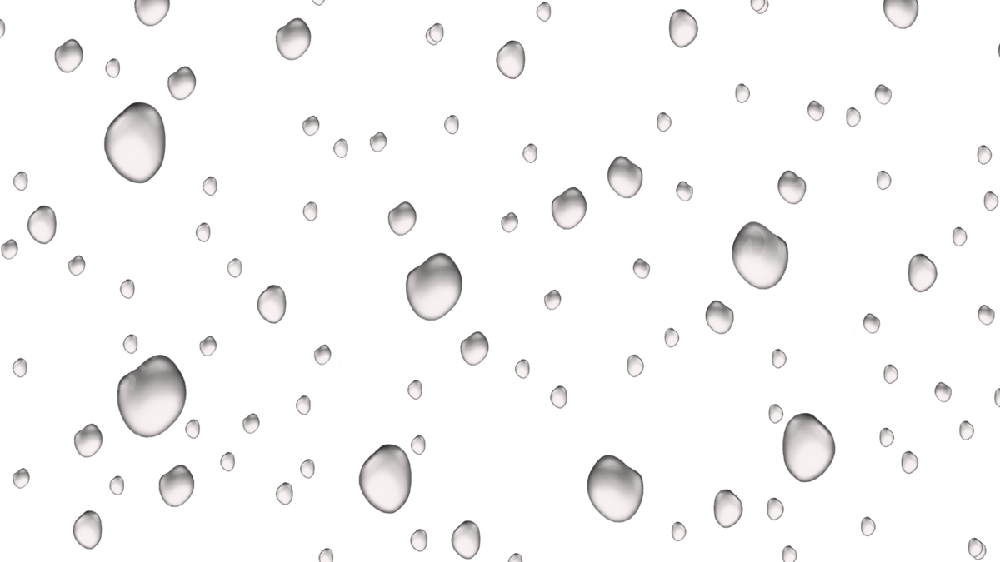

—
back
we must coexist with nature
we must coexist with nature
we must coexist with nature
we must coexist with nature
we must coexist with nature
we must coexist with nature
we must coexist with nature
i feel guilt for others not taking care of our home
when nature has always been a
subject of the human eye, why destroy it?
NATURE, the gentlest mother,
Impatient of no child,
The feeblest or the waywardest,—
Her admonition mild
In forest and the hill
By traveller is heard,
Restraining rampant squirrel
Or too impetuous bird.
How fair her conversation,
A summer afternoon,—
Her household, her assembly;
And when the sun goes down
Her voice among the aisles
Incites the timid prayer
Of the minutest cricket,
The most unworthy flower.
When all the children sleep
She turns as long away
As will suffice to light her lamps;
Then, bending from the sky,
With infinite affection
And infiniter care,
Her golden finger on her lip,
Wills silence everywhere.
The grass so little has to do, —
A sphere of simple green,
With only butterflies to brood,
And bees to entertain,
And stir all day to pretty tunes
The breezes fetch along,
And hold the sunshine in its lap
And bow to everything;
And thread the dews all night, like pearls,
And make itself so fine, —
A duchess were too common
For such a noticing.
And even when it dies, to pass
In odors so divine,
As lowly spices gone to sleep,
Or amulets of pine.
And then to dwell in sovereign barns,
And dream the days away, —
The grass so little has to do,
I wish I were the hay!